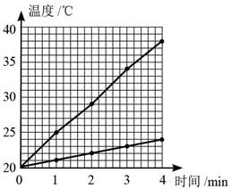
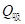
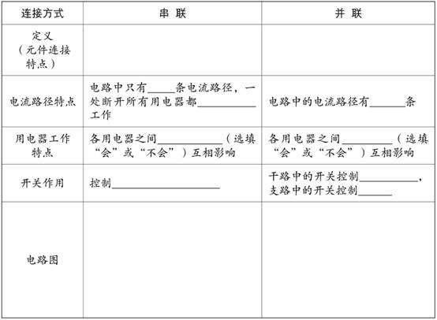
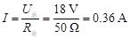
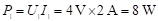

《知识与能力训练·物理九年级·全一册》参考答案
（2021秋）
第十三章 内能
第1节 分子热运动
自主导学
1．分子； 原子
2．无规则的运动
3．引； 斥
基础练习
1．D 2．D 3．A 4．C 5．B 6．D 7．B 8．D 9．B 10．D
11．AD
12．不是
提高练习
13． D
14．（1）B （2）A瓶中气体颜色逐渐变红； 分子在不停地做无规则运动 （3）④
第2节 内能（1）
自主导学
1．动； 分子势
2．焦耳（J）
3．减少； 增加
基础练习
1．B 2．A 3．B 4．D 5．D 6．C 7．D 8．C 9．B 10．C
提高练习
11．（1）①分子势能 ②分子动能 ③分子动能和分子势能 （2）水；分子势能
第2节 内能（2）
自主导学
1．做功； 热传递； 等效
2．传递能量； 焦耳（J）
3．转移； 转化
基础练习
1．D 2．D 3．C 4．B 5．C 6．A 7．A 8．B 9．B
提高练习
10．（1）温度 （2）内能 （3）热量
11．C
12．燃烧； 活塞对空气做功； 空气； 着火点； 不能
13．C
14．做功； 减小； 机械能
第3节 比热容（1）
自主导学
1．吸收的热量； 它的质量和升高的温度乘积； 焦每千克摄氏度； J/ ( kg•℃ )
2．性质； 不同
基础练习
1．质量为1kg的铜，温度每升高（或降低）1℃，吸收（或放出）的热量为0.39×103 J；
不变
2．A 3．D 4．A 5．C 6．C 7．A
提高练习
8．（1）98； （2）多； （3）不能； 实验中没有控制二者升高的温度相同
9．D
10．快 小于
11．（1）水和沙子吸收热量的多少
（2）
沙子 水

（3）沙子； 水； 比热容
第3节 比热容（2）
自主导学
cm(t－t0)； cm(t0－t)
基础练习
1．C 2．A 3．B 4．A 5．C
6．解：Q吸铝=c铝m铝(t-t0)=0.88×103 J/(kg·℃)×0.5 kg×(100 ℃-30 ℃)=3.08×104 J
Q吸水=c水m水(t-t0)=4.2×103 J/(kg·℃)×1.6 kg×(100 ℃-30 ℃)=4.7×105 J
Q吸= Q吸铝 + Q吸水 =3.08×104 J+4.7×105 J=0.308×105 J+4.7×105 J=5.008×105 J
答：共需要吸收5.008×105 J的热量。
提高练习
7．C 8．A
9.（1）大； 大 （2）C
（3）由图可知，经过3min加热，水温由70 ℃升高到95 ℃，水吸收的热量：
Q吸=cm（t－t0）=4.2×103 J/(kg•℃)×0.1 kg×(95 ℃－70 ℃)=1.05×104 J；
答：略。
第十三章测试题
一、单选题
1．A 2．A 3．B 4．B 5．D 6．A 7．D 8．D 9．D 10．B
11．C 12．B 13．B 14．B 15．D
二、双选题
16．AB 17．AC 18．AD 19．AC 20．BC
三、填空题
21．温度； 增大； 增大
22．比热容； 增加； 热传递
23．＜； ＜； 冰
24．4.2×103 ； 变小； 70
四、实验探究题
25．（1）白雾 （2）减小； 降低 （3）物体对外做功，内能减小，温度降低
26．（1）液体甲 （2）水 （3）＞ （4）2.8×103 J/(kg•℃)
27．（1）质量；（2）不相同； 2.1×103
五、计算题
28．解：（1）图甲表示的是沙子吸热升温的过程；因为沙子的比热容比水小，吸收相同热量时，沙子温度升得多。
（2）由图象知，水加热2 min时的温度由20 ℃升到70 ℃
Q吸水=cmΔt=4.2×103 J/（kg•℃）×0.2 kg×（70 ℃—20 ℃）=4.2×104 J
（3）∵相同时间内酒精灯燃烧放出相同的热量
∴在2 min的时间内， Q吸沙=Q吸水
即：c沙×0.2 kg×（250℃—20℃）=4.2×104 J
解得：c沙=0.91×103 J/（kg•℃）
答：略。
29．解：（1）水吸收的热量：
= 4.2×103 J/(kg·℃)×0.08 kg×(18 ℃－12 ℃)= 2.016×103 J
（2）铅块放出的热量：，
∵不计热损失，，
∴，
∴
答：略。
第十四章 内能的利用
第1节 热机
自主导学
1．内能； 内燃机
2．吸气； 压缩； 做功； 排气
基础练习
1．B 2．A 3．A 4．B 5．A 6．B 7．C 8．B
提高练习
9．盒盖被弹飞，盒口有白雾出现； 做功； 内； 机械
10．
第2节 热机的效率
自主导学
1．完全燃烧； 质量； 焦每千克； J/kg
2．用来做有用功的那部分能量； 燃料完全燃烧放出的能量
基础练习
1．D 2．B 3．D 4．C 5．B 6．A 7．B 8．B 9． D
10．2.8×1011； 40
提高练习
11．A
12．解：
（1）解：1标准大气压下水的沸点为100 ℃，
把壶内20 ℃、5 kg水烧开，水吸收的热量：
Q吸=c水m水t1=4.2×103 J/(kg•℃)×5 kg×(100 ℃-20 ℃)=1.68×106 J；
普通煤炉的烧水效率为28%，由η =可得煤完全燃烧放出的热量：
=6×106 J，
由Q放=mq可得普通煤炉完全燃烧煤的质量：
；
答：普通煤炉完全燃烧煤的质量为0.2 kg。
（2）解：由题可知，双加热煤炉还可额外把炉壁间10 kg水从20 ℃加热至40 ℃，
则炉壁间水吸收的热量：
Q吸′=c水m水′t2=4.2×103 J/(kg•℃)×10 kg×(40 ℃-20 ℃)=8.4×105 J，
而壶内水的初温、末温以及质量均不变，则壶内水吸收热量不变，
所以，双加热煤炉中水吸收的总热量：
Q吸总=Q吸+Q吸′=1.68×106 J+8.4×105 J=2.52×106 J；
由题意可知，双加热煤炉与普通煤炉消耗煤的质量相等，则这些煤完全燃烧放出的热量不变，
所以，双加热煤炉的烧水效率：
η′= 。
。
答：双加热煤炉的烧水效率为42%。
第3节 能量的转化和守恒
自主导学
转化； 转移； 转化； 转移； 保持不变
基础练习
1．（1）机械能转化为内能 （2）光能转化为化学能 （3）化学能转化为内能和光能
（4）风能转化为帆船的动能（5）内能转化为机械能 （6）化学能转化为电能
2．A 3．C 4．D 5．C 6．A 7．A 8．C
提高练习
9．C； 弹性势
10.（1）杠杆原理；力的作用是相互的；以滚动代替滑动可以减小摩擦；不同形式的能量可以相互转化；等等
（2）化学能、内能、机械能（动能）；通过燃烧将化学能转化为内能，蒸汽向后喷出，将内能转化为机械能
（3）力的作用是相互的，向后喷出的蒸汽反过来给汽车一个向前的推力；喷出的蒸汽是施力物体
第十四章测试题
一、单选题
1．D 2．C 3．B 4．B 5．C 6．B 7．B 8．D 9．D 10．C 11．D 12．D 13．B 14．C 15．C
二、双选题
16．BC 17．AD 18．BD 19．AD 20．AD
三、填空题
21．运动状态； 大于； 做功
22．压缩； 排气； 2； 1； 做功； 惯性
23．氢； 氢
24．热值高； 污染小
25．升高； 对水做功，水的内能增加； 机械能转化为内能
26．太阳； 电； 0.162
四、实验探究题
27．（1）煤油和菜籽油的质量、火焰的大小、烧杯中水的质量、加热时间等
（2）煤油
（3）不可靠； 水吸收的热量不等于燃料完全燃烧放出的热量
五、计算题
28．解：（1）水吸收的热量：
= cm(t－t0) = 4.2×103 J/(kg•℃)×50 kg×(50℃－10℃) = 8.4×106 J
（2）由= Vq得：
答：略。
29．解：（1）水吸收的热量：
Q吸 = cm（t－t0）= 4.2×103 J/（kg•℃）×0.1 kg×（100 ℃－20 ℃）= 3.36×104 J
（2）酒精完全燃烧放出的热量：
Q = qm = 3.0×107 J/kg×3×10-3 kg = 9×104 J
效率：
（3）水汽化成水蒸气所吸收的热量：
Q = 2.26×103 J/g×5 g = 1.13×104 J
答：略。
30．（1）将路挖成一个“V”字形后，自行车下坡时重力势能转化为动能；上坡时动能转化为重力势能。
（2）不能实现是因为自行车运动过程中受到阻力的作用，使部分机械能转化为内能，机械能减少，所以不能到达学校；若让设想实现，可以将起始点位置抬高，高于学校位置，这样有更多的重力势能转化为动能。
第十五章 电流和电路
第1节 两种电荷
自主导学
1．正； 负； 同种电荷； 异种电荷
2．电荷量； 电荷； 库仑； C
3．原子核； 核外电子； 原子核； 原子核； 核外电子
4．电荷从一个物体转移到另一个物体
基础练习
1．D 2．D 3．CD 4．D 5．B 6．C 7．C 8．D 9．B 10．D 11．BC 12．B 13．C
提高练习
14．AB 15．C 16．D 17．BD 18．B
19．梳子； 正； 从蜡烛到毛皮
第2节 电流和电路（1）
自主导学
1．电荷的定向移动
2．正电荷定向移动的方向； 正极； 用电器； 电源负极
3．电源； 闭合回路
4．电源； 用电器； 开关； 导线
基础练习
1. （1）电源； 电能
（2）自由电子； 自由移动； 铅笔芯、钢尺等； 橡皮
（3）A到B
2．A 3．CD 4．D 5．B 6．A 7．D 8．D
提高练习
9．BD
第2节 电流和电路（2）
自主导学
1．通路； 断路（或开路）； 短路； 连通； 闭合； 断开； 无； 用电器
2．； ； ；
基础练习
1．导线； 电流； 开关； 断路； 电源； 大； 电源
2．D 3．A 4．C 5．A 6．A 7．BD 8．D 9．C
提高练习
10．a；工作（通电）；使点火器所在的电路短路
11． 12．
13．断路； 断路； 通路； 短路
第3节 串联和并联
自主导学
1．串联；并联
2．依次； 并列； （1）不能； 影响 （2）能； 独立 （3）一； 无
（4）多； 干路； 支路； 支路
3．
会 不能 多 不会 整个电路 支路 1 依次连接 并列连接 整个电路

基础练习
1．串
2．并
3．并
4．断开
5．并
6．开关； 并
7．D 8．AD 9．C 10．C 11．D
提高练习
12．AB 13．D 14．BC 15．A 16．A
17． 18．
第4节 电流的测量
自主导学
1．电流； 强弱
2．电流强弱； I； 安培； A
3．毫安；微安； 10－3； 10－6
4．电流表；； 0～0.6A； 0～3A； 0.2； 0.02
5．串； ＋（或正）； －（或负）； 量程； 大； 试触； 直接
基础练习
1．（1）200 （2）0.05 （3）1×10－4 （4）1×106
2．A 3．D 4．B 5．C 6．D
7．0.3A； 1.5A； 0.12A； 0.6A； 大量程的读数是小量程读数的5倍
8．A
9．BC
提高练习
10．C 11．BC 12．D
13．3； 0.12
第5节 串、并联电路中电流的规律（1）
自主导学
处处相等； = ； =
基础练习
1．D 2．AD 3．A 4．C 5．0.3 6．B 7．B 8．D 9．A
提高练习
10．（1）断开；（2）不相同；（3）电流表的正负接线柱接反了；（4）1.5；电流表选用小量程却按大量程读数了；（5）D
第5节 串、并联电路中电流的规律（2）
自主导学
干路电流等于各支路电流之和； ＋； ＋
基础练习
1．L2； 0.28
2．AC
3．并； 变大
4．B
5．L2； 干路； 2.4
6．A3； A2； A1； 图略； 0.4A； 0.5A； 0.9A
7．0.32； 1.28
8．D
9．
提高练习
10．CD
11．（1）断开
（2）灯泡L1断路； 电流表断路
（3）0.52； 1； I = I 1 ＋ I 2
（4）用更换电源（调节电源电压）继续实验的方法进行验证
第十五章测试题
一、单选题
1．B 2．D 3．D 4．C 5．A 6．D 7．B 8．C 9．A 10．B
二、双选题
11．AD 12．AC 13．CD 14．AC 15．BD
三、作图题
16．见下图
四、实验题
17．（1）量程选错 （2）改用“0～3 A”量程
（3）见右图
18．（1）断开 （2）电流表的正负接线柱接反了 （3）＝
19．（1）断开
（2）电流没有单位
（3）方法一
（4）各支路电流之和
五、计算题
20．解：（1）当只闭合S3时，此时灯泡L2与L1串联，
已知电流表A1的示数为0.1 A，故通过L1的电流I1＝0.1 A；
（2）当闭合S1和S2时，两灯泡并联，
电流表A1测干路电流，电流表A2测L2支路电流，
由图15-16乙可知，电流表A2所接量程为0～0.6 A，由指针位置可知，此时电流为0.26 A，故通过L2的电流I2＝0.26 A；
由于并联电路干路中电流等于各支路中电流之和，则通过L1的电流为I1′＝I﹣I2＝0.5A-0.26 A＝0.24 A。
答：（1）当只闭合S3时，若电流表A1的示数为0.1 A，则两灯是串联关系；通过L1的电流是0.1 A。
（2）两灯是并联关系，电流表A1测干路电流，电流表A2测L2支路电流，通过L2的电流为0.26 A；通过L1的电流是0.24 A。
21．解：（1）由图可知，两灯泡并联，电流表A1测灯L1所在支路电流，电流表A测干路电流；
已知电流表A1的示数为0.3 A，则通过灯泡L1的电流I1＝0.3 A；
由并联电路的电流特点可知，A的示数应大于A1的示数，
已知两电流表指针偏转的角度相同，所以A选用的是大量程，A1选用的是小量程，
指针在同一位置时，电流表大量程示数是小量程示数的5倍，
所以电流表A的示数为 （即干路电流）：I＝5I1＝5×0.3 A＝1.5 A；
（2）由并联电路电流的规律可得，
通过灯L2的电流：I2＝I-I1＝1.5 A-0.3 A＝1.2 A。
答：（1）电流表A的示数为1.5 A；
（2）通过灯泡L2的电流为1.2 A。
五、综合题
22．（1）带电体能够吸引轻小物体； 负
（2）同种电荷相互排斥； 异种电荷相互吸引
（3）不属于；减少汽车尾气排放（答案合理即可）
九年级物理期中测试卷
一、单选题
1．A 2．C 3．A 4．A 5．A 6．A 7．C 8．D 9．B 10．D
二、双选题
11．CD 12．BD 13．BC 14．BD 15．BC
三、实验填空题
16．（1）自下而上
（2）易拉罐； 搅拌使液体受热均匀
（3）加热时间
（4）A； B
17．（1）断开开关
（2）电流表或L1断路
（3）电流表正负接线柱接反了； 0.24
（4）不正确； 换用不同规格的灯泡测量多组数据
四、计算题
18．解:（1）Q = c水m水（t－t0） = 4.2 ×103 J/(kg·℃) ×200 kg×(100 ℃－25 ℃) = 6.3×107 J
（2）Q放 = mq = 6 kg×3.4 × 107 J/kg = 2.04×108 J
（3）
答：略。
19．解：（1）由图可知汽车的速度为：v＝90 km/h，
由公式可知行驶100 km所用的时间为：，
在一百公里内发动机做的功为：W＝Pt＝30×103 W×4000 s＝1.2×108 J；
（2）由公式可知所用汽油的质量为：m＝ρV＝12×10﹣3 m3×0.75×103 kg/m3＝9 kg，
汽油完全燃烧放出的热量：Q＝mq＝9 kg×5.0×107 J/kg＝4.5×108 J，
发动机的效率为：。
答：（1）发动机所做的有用功是1.2×108 J；
（2）该汽车发动机的效率是26.7%。
五、综合分析题
20．（1）节能，效率高； 热传递； 热传递
（2）40℃
（3）2； 1.68×105
第十六章 电压 电阻
第1节 电压
自主导学
1．电压； 电源
2．U；伏特； V；103； 10-3
3．电压表；V；并；－；＋；0~15 V；不到3 V；0~3 V
4．①1.5； ②2； ③220； ④不高于36； ⑤380
基础练习
1．（1） 3.5×103； （2）0.15
2．B 3．B 4．A 5．8； 0.28 6．C 7．D 8．D 9．CD 10．AC 11．D
提高练习
12．A 13．BC 14．B
15．不正确；电压表正负接线柱接反了
16．
第2节 串、并联电路中电压的规律（1）
自主导学
1．电流处处相等，I = I1 = I2 =…= In
2．总电压等于各用电器两端电压之和，U = U1＋U2＋…＋Un
基础练习
1．4； 1.5； 2.5
2．2.3
3．串联； 35
4．2； 1
5．BD
6．C 7．B 8．AB
9．（1）如下图所示
（2）将电压表指针调零
（3）UAC＝UAB+UBC
（4）①
提高练习
10．（1）不同；（2）L1断路；（3）7.5； 1.5； L1
11．BC
第2节 串、并联电路中电压的规律（2）
自主导学
1．干路电流等于各支路电流之和，I = I1＋I2
2．各支路两端的电压相等，U = U1 = U2
基础练习
1．C 2. A 3．C 4．AD 5．A 6．A
7．（1）不相同；（2）L2断路；（3）断开开关，电压表换用0～3 V的量程；（4）U1＝U2＝U
提高练习
8．CD
第3节 电阻
自主导学
1．（1）阻碍作用
（2）R
（3）欧姆； 欧； Ω； 千欧； 兆欧； 103 ； 106
（4）
2． 性质； 材料； 长度； 横截面积； 温度； 电压； 电流
（1）大；（2）小；（3）一般不同
基础练习
1．B 2．C 3．C 4．BD 5．AB 6．C
提高练习
7．AC 8．（1）A； D （2）材料 （3）小
9．D
第4节 变阻器
自主导学
1．（1）电阻丝的长度
（2）电流
（3）最大阻值是50Ω，允许通过的最大电流是1A
（4）串联；一上一下；最大阻值
4．可调节亮度台灯，音响上调节音量大小的旋钮，汽车上的油量表，过磅称的称重仪
基础练习
1．乙；丁；甲和丙
2．A
3．BD
4．B 5．C 6．CD 7．D 8．C 9．A
10．不变；变小；不变 11．D
提高练习
12．（1）

（2）B （3）A；变大 （4）无影响；接入电路的电阻丝长度不变
13．AD
第十六章测试题
一、单选题
1．B 2．C 3．D 4．C 5．C 6．A 7．A 8．C 9．C 10．A 11．D
12．B 13．B 14．D 15．C 16．B 17．C 18．C 19．B 20．C 21．D
22．C
二、双选题
23．AC
24．AD
25．AD
26．BD
三、实验题
27．（1）右；保护；右（2）把滑动变阻器下面的两个接线柱接入了电路
28．（1）电流表的示数大小（2）B、C（3）材料（4）错误；没有控制电阻丝的长度不变（5）当接入电路中电阻丝的阻值变化不大时，通过灯泡的亮度无法判定电阻的大小
29．（1）UAC＝UAB+UBC（2）为了寻找普遍规律（3）2.3（4）错误；4.5
30．（1）材料和横截面积（2）能；电流一定时，电阻越大，其分得的电压越大（3）刻度尺（4）增大；增大
五、作图题
31．
第十七章 欧姆定律
第1节 电流与电压和电阻的关系（1）
自主导学
电阻； 电流； 电压； 正
基础练习
1．C 2．A 3．BC 4．C 5．C 6．C
7．1.2； 5
8．（1）
（2）当电阻一定时，通过导体的电流和导体两端的电压成正比
（3）断开； 防止电路中因短路而造成电流过大从而烧毁电路； 最大阻值； 保护电路
提高练习
9．（1）定值电阻能更好地保持电阻不变 （2）当电阻不变时，电流和电压成正比
（3）改变电源电压，进行多次实验
10．C
11．0.2； 0.9
第1节 电流与电压和电阻的关系（2）
自主导学
导体两端的电压； 电流； 电阻；反
基础练习
1．B 2．B 3．C 4．C 5．B 6．C
7．改变电阻两端的电压； 保证电阻两端的电压不变
8．（1）见下图（2）B；0.4（3）断开开关；2（4）反比
提高练习
9．B
10．（1）略 （2）1.8 V； 没有控制定值电阻两端的电压不变
第2节 欧姆定律
自主导学
1．电压； 电阻
2．U/R
电压； 伏特； Ｖ
电阻； 欧姆； Ω
电流； 安培； A
3．IR； U/I
基础练习
1．C 2．B 3．C 4．B 5．C 6．C 7．AB 8．CD 9．A
10．变小； 变大
11．解：由I=U/R 得：R=U/I=220 V/0.2 A=1100Ω
答：这盏灯正常发光时灯丝的电阻是1100Ω。
提高练习
12．解：U = IR = 0.25A×32Ω = 8V I = U/R = 8V/40Ω = 0.2A
答：此时通过40 Ω电阻的电流是0.2 A。
13．CD
第3节 电阻的测量
自主导学
1.（1）R=U/I （2）电压表；电流表 （4）多次测量电阻取平均值，减小实验误差
2.（1）R=U/I （3）获得小灯泡在不同电压下的电阻值 （4）温度
基础练习
1．B 2．A 3．B 4．CD 5．BD 6．AD
7．（1）
（2）电流； 电压 （3）0.48； 2.4； 5
8．（1）
（2）断开； B （3）A （4）10； 变大； 小灯泡的电阻随温度升高而增大
提高练习
9．D 10．D
第4节 欧姆定律在串、并联电路中的应用
自主导学
1．U/R； IR； U/I； 导体； 电路； 状态
2．=； =； R1∶R2
=； =； R2∶R1
基础练习
2．1
3．5∶1
4．D 5．C 6．C 7．D 8．C 9．C
10．（1）当滑动变阻器R接入电路的电阻R2为30 Ω时，R1与R2并联，
因并联电路中各支路两端的电压相等，
所以，通过两电阻的电流分别为：；
因并联电路中干路电流等于各支路电流之和，
所以，电路的总电流：
I=I1+I2=1.5 A+0.4 A=1.9 A；
（2）当滑动变阻器R接入电路的电阻R3为20 Ω时，通过两电阻的电流：，，
则电路的总电流：
I′=+I3=1.5 A+0.6 A=2.1 A
答：略。
11．解：∵连接方式为串联
∴I = I1 = U1/R1 = 12V/20Ω = 0.6A
= = 30V/0.6A = 50Ω
R2 = －R 1 = 50Ω－20Ω = 30Ω
答：需给它串联一个30Ω的电阻。
提高练习
12．B
13．CD
第十七章测试题
一、单项选择题
1．C 2．B 3．B 4．C 5．A 6．C 7．B 8．D 9．B 10．D 11．C 12．D 13．B 14．A 15．B
二、双项选择题
16．CD
17．BD
18．AB
19．AC
20．CD
三、实验题
21．（1）R = U/I
（2）C
（3）A； 断路
（4）改变Rx两端的电压和通过Rx的电流
（5）甲
22．（1）未知电阻Rx
（2）电压表的读数
（3）电阻箱
（4）电阻箱的阻值； 电压表恢复到原来的读数
（5）电阻箱的阻值
四、计算题
23．（1）无风时，由乙图可知， F=0时， Rx=35Ω
R总=R0+Rx=15Ω+35Ω=50Ω

（2）由乙图可知，当风力最大时，Rx的阻值最小，电路中的电流最大。
为了安全：
电流表最大值I1=3 A，
电压表最大电压15 V，I2=U/R0=15 V/15Ω=1 A
Ix最大为0.9A
所以电路中最大电流为0.9A
R总=U/Ix=18V/0.9A=20Ω
Rx=R总-R0=20Ω-15Ω=5Ω
由乙图知，对应的最大风力为720N
答：（1）电压表示数5.4V，电流表示数0.36A。
（2）此装置能测的最大风力为720 N。
24．解：（1）U = I1R1 = 0.3A×40Ω = 12V
（2）I2 = U/R2 = 12V/10Ω = 1.2A
（3）I = I1＋I2 = 0.3A＋1.2A = 1.5A
（4）R = U/I = 12V/1.5A = 8 Ω
答：（1）电阻R1两端电压是12V；
（2）通过电阻R2的电流是1.2A；
（3）通过电路的总电流是1.5A；
（4）电路的总电阻是8 Ω。
五、综合开放题
25．（1）210
（2）1200
（3）①220； ②报警器报警； ③S1断开、S2闭合
（4）1000
第十八章 电功率
第1节 电能 电功
自主导学
1．电流做功的多少； W； 焦耳； J ；度； 千瓦时； kW·h； 3.6×106； UIt
2．用电器在一段时间内消耗的电能； 电能表应该在220 V的电路中使用； 电能表的标定电流为10 A，额定最大电流为20 A； 用电1 kW·h，指示灯闪烁1600次
基础练习
1．C
2．B
3．130； 65； 10
4．7.2×105； 2
5．AB
6．3.6； 9331.2
7．解：电流做的功：
W = UIt = 220 V×6.8×10－2 A×3600 s = 53856 J
∵电灯消耗的电能与电流通过电灯做的功相等，
∴消耗的电能也为53856 J。
答：通电1h电流做的功为53856 J，消耗的电能为53856 J。
提高练习
8．520.3； 2000
9．A
10．解：（1）
（2）在串联电路中，
答：略。
第2节 电功率
自主导学
1．电流做功的快慢； P
2．瓦特； 瓦； W； 千瓦； kW； 1kW=103W
3．； UI
基础练习
1．BD 2．C 3．D 4．C 5．C
6．白炽灯正常工作时的电压； 白炽灯正常工作时的电功率； 0.45； 484
7．40； 160
8．0.02； 1200
提高练习
9．BD 10．D 11．C 12．B
13．解：（1）在串联电路中，
（2）
（3）

答：略。
14．解：（1）在并联电路中，
（2）
答：略。
第3节 测量小灯泡的电功率（1）
自主导学
1．= UI
2．电压表； 电压； 电流表； 电流； 伏安
基础练习
1．B 2．A 3．C
4．（1） 2； 0~3 V （2）滑动变阻器； 电压表； 2.5 V （3）0.4； 偏暗
5．（1）如下图所示
（2）电压表正负接线柱接反了 （3）0.3；0.75
6．（1）
表18.3-1
|
故障现象 |
检测 |
故障原因 |
|
灯泡不亮，电压表示数较大，电流表无示数 |
取下灯泡，两表的示数不变 |
灯泡断路 |
|
灯泡较暗，两表示数均较小 |
移动滑动变阻器滑片，现象不变 |
滑动变阻器同时接下面两个接线柱 |
（2）
表18.3-2
|
实验次序 |
电压表示数U/V |
电流表示数I/A |
功率P/W |
额定功率P额/W |
|
1 |
3.0 |
0.36 |
1.08 |
1.52 |
|
2 |
3.8 |
0.40 |
1.52 |
1.52 |
|
3 |
4.5 |
0.42 |
1.89 |
1.52 |
把0～0.6A量程读成0～3A量程
提高练习
7．（1）B
（2）（3）C （4）右 0.45
（5）A
第3节 测量小灯泡的电功率（2）
自主导学
1．等于； 等于； =； =
2．<； 暗； >； 亮； ； 亮； 暗
基础练习
1．C 2．C 3．D
4．串； 8； 2
5．（1）U = 6V （2）0.5A （3）24Ω （4）4.5W
提高练习
6．D 7．B 8．D
9．甲； 乙； 甲
10．2∶3； 3∶2； 6∶25
11．解：（1）灯泡L2的电阻R = U2/P = (220V)2/40W = 1210Ω
L1正常工作5h消耗的电能W = Pt = 0.04kW×5h = 0.2kW•h
（2）断开S1，闭合S时，电流I = U/= 220V/（1210Ω＋1210Ω）= 1/11A
L1两端的电压U1 = IR1 = 1/11A×1210Ω = 110V
（3）两盏灯泡都亮时电路的总功率= UI = 220V×1/11A = 20W
答：略。
第4节 焦耳定律
自主导学
1．电流通过导体时，电能转化为内能
2．电流的二次方； 跟导体的电阻； 跟通电时间
3．
基础练习
1．B 2．C 3．D 4．C 5．D
6．甲； 乙
7．0.4； 48； 48； 4
8．2∶1； 1∶2
9．2∶1
10．（1）高度差； 转换法 （2）乙； 大
11．解：（1）闭合S、S1为“低温”挡，R1单独接入电路，由P=可求“低温”挡正常工作时的电阻是：
R1===88 Ω；
（2）单独闭合S、S1为“低温”挡，R1单独接入电路；单独闭合S、S2为“中温”挡，R2单独接入电路；“高温”挡为S、S1、S2同时闭合，R1、R2并联，P高温=P低温+P中温=550 W+1100 W=1650 W，
根据P=UI可得“高温”挡时正常工作的电流：I===7.5 A，
（3）电暖器的“高温”挡正常工作20分钟，放出的热量：
W=P高温t=1650 W×20×60 s=1.98×106 J；
空气吸收的热量：Q吸=ηW=50%×1.98×106 J=9.9×105 J；
由Q吸=cmΔt可得，房间的空气温度升高：
Δt= ==15℃。
==15℃。
答：（1）“低温”挡正常工作时的电阻是88 Ω；
（2）“高温”挡正常工作时的总电流是7.5 A；
（3）可使此房间的空气温度升高15℃。
提高练习
12．C
13．解：（1）只闭合S1，电路只有电动机工作，即= 80 W，则消耗电能：
W = P冷t = 80 W×60 s = 4800 J
（2）同时闭合S1、S2，电路为电动机与电热丝并联，吹热风，
∴= 880 W UR = U = 220 V
∴电热丝功率：PR = P总－PM = 880 W－80 W = 800 W
电热丝电流：IR = PR/UR= 800 W/220 V≈3.6 A
（3）吹热风时，电动机与电热丝并联，则PR = 800 W，电热丝消耗的电能全部转化为内能，1 min内电流通过R产生的热量：Q = W = PRt = 800 W×60 s = 4.8×104 J。
答：略。
第十八章测试题
一、单选题
1．D 2．C 3．B 4．C 5．C 6．D 7．A 8．A 9．B 10．B
二、双选题
11．AD
12．AB
13．CD
14．BD
15．BD
三、实验题
16．（1）P=UI
（2）0～15 V
（3）断路
（4）1.225
17．（1）电流 左瓶 （2）电阻 左瓶
18．（1）
（2）2.2 B 0.5 （3）温度 （4）B
四、计算题
19．解：（1）由IR＝0.1 A得，R两端的电压为：
UR＝IRR＝0.1 A×20Ω＝2 V；
由并联电路电压特点和欧姆定律得，此时L的电阻：
RL＝＝10Ω；
（2）L的实际功率为：
P实＝UIL＝2 V×0.2 A＝0.4 W；
（3）通电20s，L、R共消耗的电能为：
W＝UIt＝U（IR+IL）t＝2 V×（0.1 A+0.2 A）×20 s＝12 J。
答：（1）此时L的电阻为10Ω；
（2）L的实际功率为0.4 W；
（3）通电20 s，L、R共消耗的电能为12 J
20．（1）1；加热
（2）该电饭锅此次工作30 min消耗的电能为7.92×105 J
（3）电阻R1与R2的阻值之比为1∶3
（4）可以给电阻R1并联一个阻值为220 Ω的电阻R3
五、综合能力题
21．（1）电流； 电压 （2）0.5 （3）先变大后变小 （4） 0.2； 1.8
第十九章 生活用电
第1节 家庭电路
自主导学
1．电能表； 总开关； 保险盒； 零线； 火线； 地线
2．大地； 零； 火； 火
3．零线； 火线； 地线
4．人体； 迅速切断电流
基础练习
1．B 2．AD 3．B 4．A 5．C 6．D
7．
提高练习
8．D 9．C 10．D
第2节 家庭电路中电流过大的原因
自主导学
1．用电器的总功率过大； 发生短路
2．小于或等于； 熔断电流； 熔断； 空气开关
基础练习
1．C 2．B 3．B 4．C 5．D 6．A
7．用电器的总功率过大； 2200
8．AD
提高练习
9．B 10．15
第3节 安全用电
自主导学
1．36； 220； 380
2．接触； 靠近
基础练习
1．A 2．B 3．D 4．A 5．D 6．D 7．A
8．火； 接地； 断开
提高练习
9．B 10．B
第十九章测试题
一、单选题
1．C 2．C 3．B 4．C 5．C 6．B 7．C 8．B 9．A 10．D
二、双选题
11．CD 12．AB 13．AC 14．AD 15．AB
三、填空题
16．火； 220； 并； 串
17．接触； 切断电源； 电源
18．零； 火； 地； （b）
19．220 V； B
20．火； a
21．火线； 零线； 短路
22．不高于36； 12
23．火线； ab之间断路
24．1； 2； ④
四、作图题
25．
26.
27.
五、综合分析题
28．（1）热； 高； 光； 内
（2）白炽灯正常发光时通过它的电流强度约为0.27 A；该白炽灯刚开始工作时的电功率为605 W；灯泡刚开启的时候，功率是正常工作时的10倍，电流也是正常工作时的10倍，远大于额定电流，灯泡容易损坏，频繁开闭更增加了损坏的概率，所以白炽灯不宜频繁开闭。
（3）需照明5000 h时使用60 W白炽灯和11 W节能灯的成本加电费分别是157.5元、45.5元。从经济角度考虑应选节能灯。
29．（1）工人在干活过程中出汗或其他因素导致双手潮湿时，人的电阻明显减小，人若接触较高的电压，根据欧姆定律I=U/R可知，通过人体的电流就会很大，人就会有危险。大量实验表明，只有不高于36 V的电压对人体才是安全的，所以，机床上的工作照明灯的额定电压都不高于36 V。
（2）不符合；拥有三脚插头的用电器一般都有金属外壳，三脚插头的“长脚”是为了将用电器接入电路的同时把用电器的外壳与接地线连接起来，防止因外壳带电引发触电事故，所以不可将三脚插头的“长脚”去掉后再使用。
（3）小严朋友的建议不可行；因为电路中的导线都有其允许通过的最大电流，如果超过了这个最大值，导线就会因过热而烧坏，甚至引起火灾。在电路中安装的空气开关，能够在电路中的电流超过最大允许值时自动断开电路，从而起到保护电路的作用。小严家的空气开关不时地“跳闸”，说明他家电路中的电流超过了最大允许值，如果拆去空气开关，电路就失去保护，很容易引起火灾，非常危险。
正确的做法是：通过电工师傅，进行线路改造，更换额定电流大一些的空气开关。
第二十章 电与磁
第1节 磁现象 磁场
自主导学
1．铁； 钴； 镍
2．磁极； 南； S； 北； N； 同名磁极相互排斥； 异名磁极相互吸引
3．磁体 电流
4．磁场； 磁场； 北极
5．磁感线； 北； 南
6．北； 南；（宋代学者）沈括
基础练习
1．B 2．AC 3．B 4．C 5．AD 6．B 7．C 8．B 9．C 10．C
11．CD
12．
提高练习
13．B； A
第2节 电生磁（1）
自主导学
1．磁场； 电流方向； 电流的磁效应
2．条形磁体； 条形磁体； 电流方向
基础练习
1．C 2．C 3．D 4．B
5．AD 6．BD
7．（1）磁场； 磁场方向与电流方向有关
（2）观察磁场的存在
（3）BD
（4）自由电子定向移动形成电流，电流周围存在磁场
（5）c； 电子带负电，负电荷定向移动的方向与电流的方向相反
提高练习
7．电子定向移动形成电流，电流周围存在磁场； 纸外
第2节 电生磁（2）
自主导学
电流方向； 安培定则； 右； 电流方向； 螺线管的北极
基础练习
1．D 2．D 3．B 4．BC 5．AC 6．C 7．A
8．
9．
提高练习
10．C 11．A 12．A
第3节 电磁铁 电磁继电器
自主导学
1．（1）铁芯 （3）电流的磁效应 （4）电流的通断；电流的方向；电流强弱；线圈匝数
2．（2）衔铁； 消失； （3）低； 弱； 高； 强
基础练习
1．AC 2．B 3．A 4．C 5．B 6．B 7．D
8．电流； 磁性； 工作； 失去磁性； 停止工作
9．（1）乙； 线圈匝数越多；（2）增加；电流越大；（3）N； （4）B
10．CD
提高练习
11．BC 12．D 13．C
14.
第4节 电动机
自主导学
1．力； 电流； 磁场
2．电； 机械；换向器
基础练习
1．C 2．A
3．（1）C； （2）电动机
4．A
5．（1）电流（或通电线圈）； 电流方向不同； 90； （2）换向器； 刚转过；（3）①；弹性
6．D 7．BD
8．（1）电流 （2）磁场
提高练习
9．（1）电动机正常工作时的电流I＝＝25 A；
（2）电动机工作2 h消耗的电能W＝Pt＝5.5 kW×2 h＝11 kW•h。
答：电动机正常工作时的电流是25 A；连续工作2 h耗电11 kW•h。
10．A 11．B
第5节 磁生电（1）
自主导学
1．切割磁感线； 电磁感应； 感应电流； 法拉第
2．导体切割磁感线； 磁场
基础练习
1．D 2．C 3．B 4．B 5．A
6．AD； BC
提高练习
7．C 8．BC 9．B 10．A
11．会； 线圈
第5节 磁生电（2）
自主导学
1．电磁感应； 机械； 电
2．周期性； 0.02； 50
基础练习
1．C 2．B 3．C
4．电； 机械能
5．振动； 电磁感应； 电
6．BD
提高练习
7．方向； 50； 100； 保持不变； 直流电
8．D 9．D
第二十章测试题
一、单选题
1．B 2．B 3．C 4．A 5．D 6．B 7．D 8．B 9．A 10．C 11．D 12．C 13．C 14．D 15．C 16．B 17．A 18．D 19．B 20．C
二、双选题
21．CD 22．CD 23．AD 24．AB 25．CD 26．BD
二、作图题
27．
28． 29． 30．
N S

三、填空题
31．（1）条形 （2）磁场方向 （3）通电螺线管两端的极性跟螺线管中电流的方向有关
（4）不能
32.（1）ab； （2）bc； （3）d； 通过线圈的电流相等
33.（1）感应电流 磁场
（2）感应电流 导体切割磁感线
（3）切割磁感线
四、综合开放题
34．（1）负；
（2）
第二十一章 信息的传递
第1节 现代顺风耳——电话
自主导学
1．话筒； 听筒； 声音； 变化的电流； 变化的电流； 声音
2．电话交换机
3．模拟信号； 数字信号
基础练习
1．D 2．C 3．D 4．C 5．CD
提高练习
6．B 7．D 8．D 9．AD
10．（1）话筒； 声音； 电流； 话筒； 电阻
（2）听筒； 对方随声音变化的电流； 变化的磁场； 听筒； 电磁铁
第2节 电磁波的海洋
自主导学
1．变化的电流； 能够； 传递信息（或传递能量）
2．不需要； 能够； 3×108； 3×105
3．c； 赫兹； 千赫（kHz）； 兆赫(MHz)
4．无线电波、红外线、可见光、紫外线、X射线、γ射线
基础练习
1．D 2．A 3．A 4．A 5．C 6．C
提高练习
7．CD 8．AD 9．D
第3节 广播、电视和移动通信
自主导学
1．电磁波
2．图像信号； 声音信号
3．发射台； 接收台； 灵敏度； 基地台
基础练习
1．A 2．A 3．B 4．A 5．C
提高练习
6．AB
7．C
8．AC
9．话筒； 调制器； 高频电流
10．电磁波； 无线电广播； 摄像机； 发射天线； 接收天线； 显示器
第4节 越来越宽的信息之路
自主导学
1．光； 中继站； 频率； 更多
2．通信卫星； 中继站； 静止的； 3
3．激光； 反射； 激光； 频率； 大量
4．电子邮件； 因特网
基础练习
1．B 2．CD 3．A 4．B 5．AC 6．C 7．B 8．B
提高练习
9．A 10．BD
第二十一章测试题
一、单选题
1．C 2．D 3．D 4．D 5．D 6．B 7．A 8．B 9．C 10．A
二、双选题
11．AC 12．AD 13．CD 14．AC 15．BC
三、实验填空题
16．声波； 导线中的电流； 电磁波
17．增强； 减弱
18．光导纤维； 电信号
19．电磁波； 不能
20．0.5； 6×108； 1.3
四、计算题
21．（1）电磁波； 紫外线； （2）D
（3）小车的重力：
G＝mg＝1.2×103 kg×10 N/kg＝1.2×104 N；
小车对地面的压力为：F＝G＝1.2×104 N；
小车与地面的总接触面积为：S＝4×0.03 m2＝0.12 m2，
小车静止在水平路面上对路面的压强：＝1×105 Pa；
答：小车静止在水平路面上对地面的压强为1×105 Pa。
（4）由图21-2乙所示可知，车以最大机械功率P运动时的速度为10 m/s，
因为P＝Fv，所以车的牵引力 ＝80 N，
＝80 N，
车做匀速运动，所受阻力f＝F＝80 N，
车的功率P1＝F1v＝fv＝80 N×6 m/s＝480 W；
答：则该车运动时所受阻力为80 N；功率P1为480 W。
22．（1）3×108
由c＝λf可得它的波长λ＝＝8000 m
（2）超声波从发出到传到黑匣子的时间：
t＝×2 s＝1 s，
由v＝可得，黑匣子到潜艇的距离：
s＝vt＝1500 m/s×1 s＝1500 m；
（3）月球周围是真空，因为真空不能传声，所以如果黑匣子失落在月球表面，用声呐技术无法探测黑匣子。
答：（1）3×108；它的波长为8000m；
（2）黑匣子到潜艇的距离是1500m；
（3）不能；月球周围是真空，真空不能传声。
五、综合开放题
23．（1）电磁波；小于 （2）电磁感应；16 （3）B （4）动能
24．示例：
实验步骤：实验者持手机在小屋外，观察到手机有信号；然后，实验者持同一部手机进入小屋内并关门后，观察手机是否有信号。
判断方法：如果小屋内手机无信号，说明电磁屏蔽玻璃有屏蔽作用；如果小屋内手机有信号，说明电磁屏蔽玻璃没有屏蔽作用。
第二十二章 能源与可持续发展
第1节 能源
自主导学
1． 煤、石油、天然气等； 一次能源； 风能、水能、太阳能、地热能以及核能；
一次能源； 二次能源
2．不能再生； 消耗殆尽； 开发新能源、更好地利用已知能源
基础练习
1．C 2．B 3．D 4．B 5．D
提高练习
6．C 7．C 8．B 9．AD 10．AD
第2节 核能
自主导学
1．原子； 原子核； 电子； 质子； 中子； 正电； 相等； 不带电
2．核力； 分裂或结合； 核能
3．质量较小的核； 裂变； 链式； 核反应堆； 可以控制的；原子弹
4．聚合为一个质量较大的原子核； 释放出； 热核反应； 不可以控制的
5．消耗燃料少，清洁； 核废料； 放射性
基础练习
1．D 2．D 3．B 4．A 5．BC 6．AB 7．A
8．太阳； 电； 聚变
提高练习
9．（1）裂变 （2）热交换器； 机械 （3）磁场； 电磁感应 （4）节省化石能源、减少空气污染（核能十分巨大）等
第3节 太阳能
自主导学
1．聚变； 巨大的； 热和光的； 辐射
2．太阳能
3．化石燃料； 直接利用； 两； 用集热器把水等物质加热； 用太阳能电池把太阳能转化为电能
4．分布广； 获取方便； 无污染
基础练习
1．A 2．B 3．D 4．AB 5．AB 6．A
7．太阳； 化学； 太阳； 电； 太阳
提高练习
8．1.26×107； 0.42
9．B
第4节 能源与可持续发展
自主导学
1．方向性； 能量转化或转移的过程中； 有条件的； 有限的； 节约能源
2．环境； 热污染； 热岛效应； 温室效应； 二氧化硫、一氧化碳、氮氧化物和粉尘
3．可持续发展； 需要； 需求
基础练习
1．C 2．C 3．C 4．A 5．D 6．C
提高练习
7．BC 8．CD 9．C 10．AD 11．AC
12．①③④⑦； ②⑦； 方向
第二十二章测试题
一、单选题
1．C 2．D 3．D 4．A 5．B 6．D 7．C 8．A 9．B 10．D
二、双选题
11．CD 12．BC 13．CD 14．AD 15．AB
三、填空题
16．（1）② （2）③ （3）① （4）④
17．核聚变； 3×105
18．（1）电能转化成内能
（2）动能转化成重力势能
（3）机械能转化成内能
（4）电能转化成机械能
四、计算题
19．解：（1）由可得太阳能热水器内水的质量为：
m＝ρV＝1.0×103 kg/m3×0.25 m3＝250 kg；
（2）水吸收的热量：
Q吸＝c水mΔt＝4.2×103 J/(kg•℃)×250 kg×(60℃﹣20℃)＝4.2×107 J；
（3）由题意可知，干木柴完全燃烧释放的热量：
Q放＝＝5.25×107J，
由Q放＝mq可得，需要干木柴的质量：
m′＝＝4.375 kg。
答：（1）该太阳能热水器内水的质量为250 kg；
（2）这些水吸收的热量是4.2×107 J；
（3）需要4.375 kg干木柴。
20．解：（1）因为漂浮城市漂浮在水面上，
所以漂浮城市增加的浮力就是40位中学生的重力，
而G＝mg＝50 kg×10 N/kg＝500 N，
所以漂浮城市增加的浮力为：
F浮＝40G＝40×500 N＝2×104 N。
（2）由得，空洞内空气的体积：
V＝＝1.6×106 m3，
而空洞的面积为S＝2.0×104 m2，
空气移动的距离：
L＝＝80 m，
由题意知，时间t＝1 s，
则飓风的风速：v＝＝80 m/s；
（3）根据运动速度v与时间t图象可知，漂浮城市做匀速直线运动时，
其速度v＝0.5 m/s，所用时间t′＝100 s﹣50 s＝50 s，
由v＝得，漂浮城市运动的路程：
s＝vt′＝0.5 m/s×50 s＝25 m，
从F的大小与时间t的关系图象可知，50 s到100 s时，拉力F＝8×108 N，
则牵引力F做的功：W机＝Fs＝8×108 N×25 m＝2×1010 J。
由P＝得，太阳能电池板接收的太阳能：
W太＝Pt′＝8.0×108 W×50 s＝4×1010 J，
则太阳能转化为机械能的效率：
η＝×100%＝×100%＝50%。
答：（1）漂浮城市受到的浮力约增加2×104 N；
（2）飓风的风速80 m/s；
（3）漂浮城市在匀速运动过程中，太阳能转化为机械能的效率为50%。
五、综合能力题
21．（1）可再生 小于
（2）B
（3）如图示：
（4）省力 室外机尽量靠近A处安装
22．（1）B （2）电磁感应； 机械能（或风能）； 电能 （3）80
（4）6 （5）14.4 （6）700； 7.98
九年级物理期末测试卷
一、单选题
1．C 2．D 3．A 4．B 5．B 6．D 7．C 8．C 9．B 10．C
二、双选题
11．AC 12．CD 13．BD 14．BC 15．CD
三、实验题
16．（1）断开
（2）
（3）断路（4）8.3（5）不能，小灯泡的电阻受温度的影响
17．（1）①
② RB ③ B 1.52
（2）②只闭合开关S、S2，移动R2的滑片，使电流表示数为I额。 ④I额2 I2 R0/（I1-I2）
四、计算题
18．（1）当S和S1都闭合时， R1和R2并联， 总电阻较小，根据I=U/R，电流比较大， 由乙图知， 此时总电流为3 A，P=UI=220V×3A =660W
（2）当只闭合S时，只有R1工作，电阻较大，根据I=U/R，电流比较小，由乙图知， 此时电流I1=2 A，
当R1和R2并联时，I2=I-I1=3 A-2 A=1 A 由I=U/R得R2=U/I2=220V/1A=220Ω
（3）I=3 A时， t=15 min=900 s，W1=UIt=220 V×3 A×900 s=5.94×105 J
I′=2 A时， t′=15 min=900 s，W2=UI′t′=220 V×2 A×900 s=3.96×105 J
Q=W=W1+W2=5.94×105 J+3.96×105 J=9.9×105 J
19．（1）5 A
（2）R2的阻值44 Ω； R1的阻值356 Ω
（3）Q吸=1.008×106 J W=1.32×106 J 76.4%
五、综合分析题
20．（1）负 520； （2) 变小； （3）1； （4）2.5~40